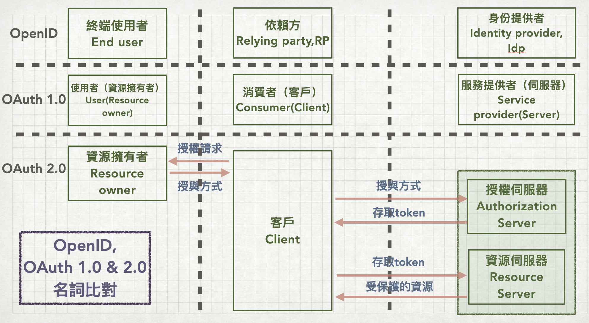

前言
建議直接了解2.0後再回來看看1.0在幹嘛，這樣反而會比較好懂。
關於2.0，可以直接參考Oauth 2.0 筆記（一），流程與名詞解釋
首先講到Oauth1.0就要從OpenID講起，但不管是OpenID/Oauth1.0/Oauth2.0，我們可以從他們更早以前的一個概念：單一登入SSO(Single Sign On)講起。
單一登入SSO
一種設計的概念，希望能透過單一入口登入，存取多個有關聯的服務，不需要針對各個服務個別登入。在linux系統中通常用LDAP來實作，可以一次用同一個身份登入多個linux server。當然OpenID也算是SSO的一種（基於HTTP），由OpenID衍生出的Oauth也是SSO。
Note: 可以視為SSO的有：
- LDAP(管理linux server)
- OpenID
- Oauth 1.0
- Oauth 2.0
SSO的好處
- 想讓第三方網站存取我放在某個提供者那邊的資料，不需要給這個第三方帳號密碼
- 減少註冊太多組使用者與密碼的管理麻煩
- 減少相同身份的使用者在不同服務輸入帳密的時間
- 減少與密碼有關的request處理成本……畢竟驗證可以丟給身份提供者來做
OpenID
一開始就想做一個 身份認證 的服務，讓使用者在其他網路服務中可以輕鬆讓網站確認數位身份（不用註冊就能登入）。
- 終端使用者（End user），想像某個網站表達身份的人，就是某個吃瓜群眾上了某個網站，想讓這個網站知道自己的身份。就像是我們還沒註冊購物網站的會員，但購物車要結帳時需要有會員紀錄跟email資料等讓購物網站能確認訂單與物流流程
- 標示（Identifier），終端使用者會有的一個url，如果終端使用者想登入某個依賴方，須將這個url先登記在依賴方，
- 身份提供者（Identity Provider, IdP），肯定是有很多人註冊會員的網站，資料庫打開一整串的會員跟會員的個人資料。這些會員跑到其他網站時，能用這個網站的會員來提供數位身份，就不用特別在註冊。
- 依賴方（Relying Party, RP），就是剛剛說的那個想用別人的會員資料讓訪客可以快速登入使用數位身份的……尤其很懶得做註冊系統以及會員管理系統就很容易一直當依賴方。
Oauth1.0:
Twitter用OpenID用一用，漸漸覺得需要一個更明確的規範，來應付未來更複雜的第三方資料存取的設計，所以他們開始設計撰寫Oauth1.0的標準（原來是twitter….）。這個標準希望能允許第三方用戶存取某個伺服器上受保護的資源。
驗證方式比較類似2.0的 授權碼（Authorization code）。
Oauth 2.0:
Oauth1.0的下個版本，著重在客戶端（各種App/網站）開發的容易與否。除了角色名稱的更動（如consumer -> client）以外，還定義了四種授權方式：
- 授權碼（Authorization code）
- 隱性（Implicit）
- 資源擁有者的密碼憑證（Resource owner password credentials）
- 客戶憑證（Client credentials）
各種名詞比較
因為這三個規範都有明確相同權責的角色，但是每個規範裡面的名稱又不大一樣。
所以我在整理成表格之前，其實根本把不同規範的名詞搞混。拿著這張表，研讀OpenID/Oauth1.0的相關文件能很快抓到角色與流程的感覺。
Ex. 有些API裡面會有consumer_key，我之前一直沒辦法搞清楚它跟client_key的差別，整理完才知道他們(consumer與client)兩個的角色是一樣的，只是在Oauth1.0與2.0的名稱不同。
所以我才覺得，要了解Oauth，一開始從Oauth2.0開始讀懂，之後再往前面版本整理較好。這些角色的名稱與規範是到2.0才變得更清楚。

我們可以看到，到Oauth2.0，更把資源擁有者拆開成
- 專門負責驗證與授權的 授權伺服器
- 保管受保護資訊的 資源伺服器
這就是更嚴格的規範與更複雜的權責設計。在2.0以前，這些都是服務提供者（Service Provider）或是身份提供者 （IdP）一個伺服器就概括的架構。
小結
這篇主要整理這三代 驗證規範 的各個名稱與角色。可以看到從OpenID到Oauth2.0是變複雜但也 越來越明確明確 的角色 + 各角色的權責。將這些角色與流程整理成表比較，才不會把這幾代都搞混。
至於Oauth1.0/2.0的各個授權流程，就放在別篇再敘述啦！